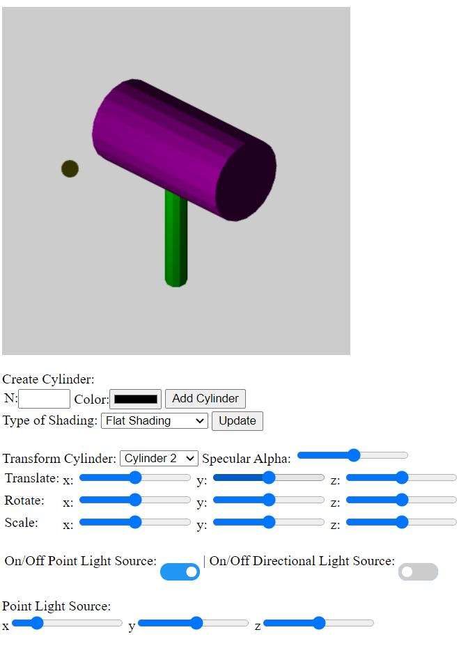
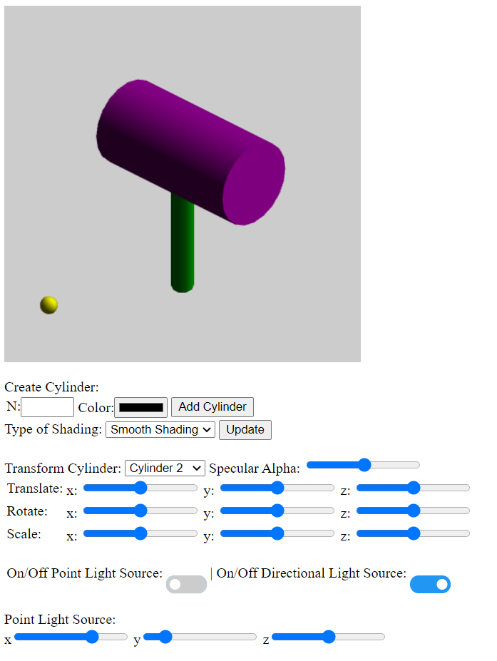
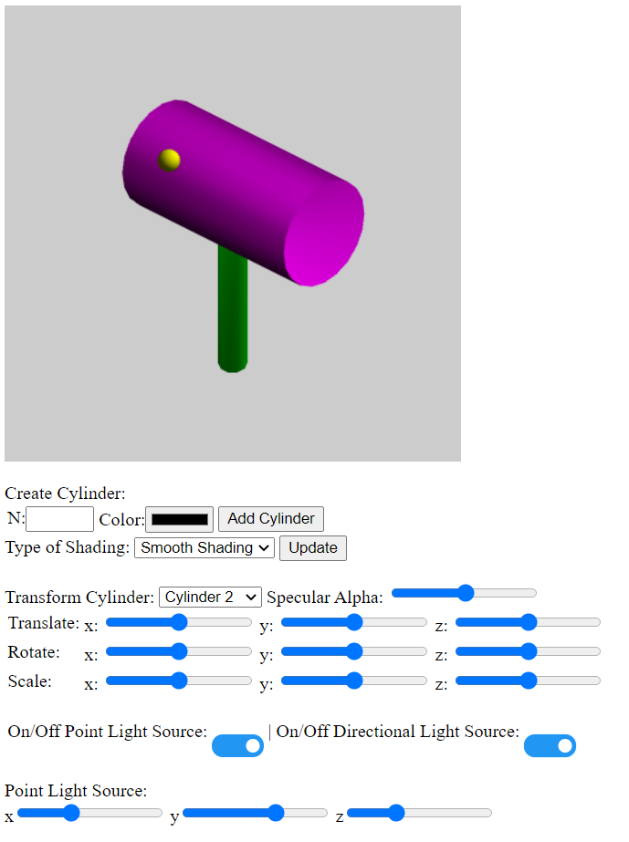
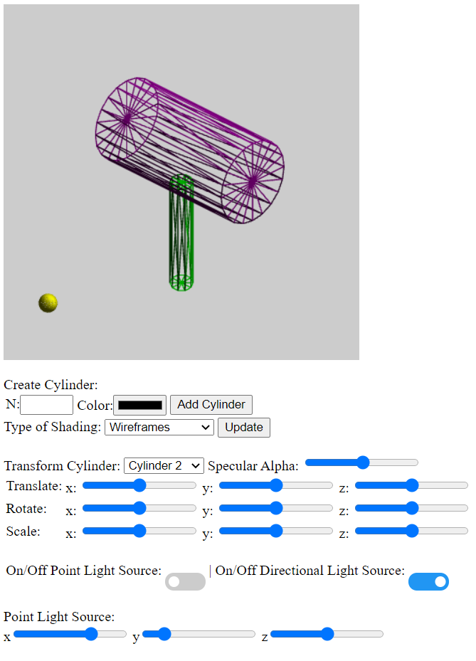
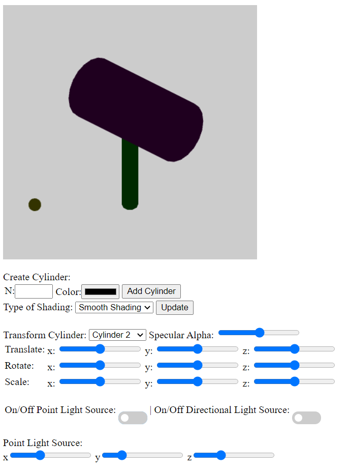

Date: May 9, 2021
A program that contains a 3D environment where objects created by the user can have different types of
shading: Flat Shading, Wireframes, and Smooth Shading. Smooth Shading is done through Gouraud Shading,
utilizing all three ambient, diffuse, and specular lighting to present a light source hitting the surfaces
of each object cylinder.
Inside the Cylinder Class Object contains two sets of normals for each appropriate shading option. Smooth
normals for smooth shading were calculated through the sum of each vertex normal on each cylinder face.
In the world contains two light sources where one light source is only one directional
while the other light source can be controlled by the user. Each light source provides appropriate lighting
effects using ambient and specular lighting, where ambient lighting provides a softer appearance of the object
while specular lighting provides the glossiness part of the object where the light peaks the most.
- To create a cylinder, you must input an N number that will represent the number of sides for the cylinder.
Below the number input is a Color Box, where the user can decide what color shading the user wants on their
created cylidner. Once the user has decided on N and the Color, they can click on "Add" to create the new cylinder.
- To control a specific cylinder, users can click on the drop down menu containing all created cylinders and click
on the numbered cylinder they would like to control.
- To make every cylinder into a wireframe rather than completely filled out, users can use the "Wireframe" checkbox
to view the wireframes of each cylinder.
- Users are able to transform each Cylinder Object through 3 options: Translate, Rotate, and Scale. Each transformation has 3 slides that are assigned to each axis on the 3D plane. Each slider performs the appropriate transformation depending on which axis it is being used on.
Choosing Type of Shading / Updating the CanvasBelow the user input of the cylinders, there is a Shading List that contains three possible choices: Flat Shading, Smooth Shading, and Wireframes. Choosing one from the list will adjust how each object on the canvas will be outputted as. To update the canvas, click on "Update" after selecting the desired shading choice.
Toggling On/Off Light SourcesBelow the table to transform cylinders around are two toggle switches that are ON at the start. Each switch corresponds to the appropriate light source labeled. To turn each specific light source ON/OFF, click on the toggle switch as such. Note: If both the switches are OFF, the objects will only have Ambient Lighting.
Moving the Point Light SourceThe Point Light Source is represented as the small yellow sphere on the bottom part of the canvas. If the Point Light Source is toggled to be on, the user can adjust the point light source by adjusting which axes the user wants to move towards.
* At the start of the program, there is a weird light source at the bottom left that is noticeable
on the handle of the mallet. Not sure what is causing the problem however it disappears when one of the light
source switches has been toggled.
* The normals of the end caps seem to be inverted when applying flat shading and viewing the top left cap
of the mallet head cylinder. Before it was only with smooth normals however it is now occurring for flat normals.
* When rotating the z-axis head of the mallet on smooth shading, the colors/lighting changes while the sides/faces
remain the same.
* Not 100% sure if this is an issue to care about but something to note. The sphere that represents the point
light source seems to only glow when there is directional light and never when the point light is enabled.
Flat Shading with only Point Light:
Smooth Shading with only Directional Light:
Smooth Shading with Both Light Sources:
Wireframes:
Ambient Lighting / Both Light Sources are Off
